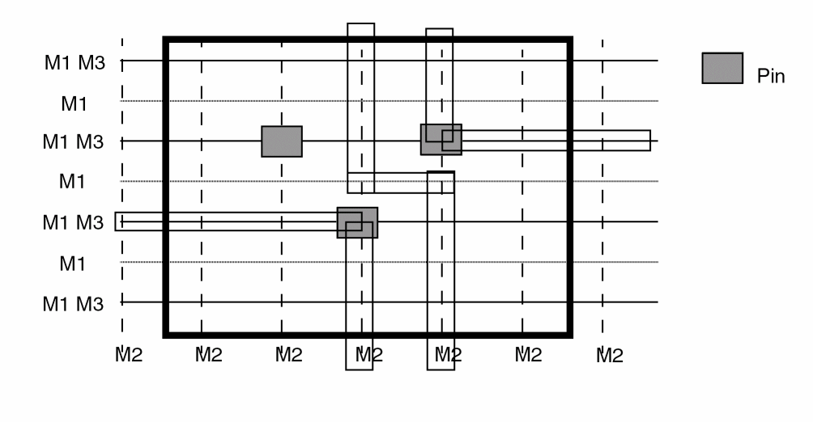

Pin Staggering in Abstract Generator
Abstract Generator 中的引脚交错布局
If you have one vertical routing layer, and line-to-via pin spacing, you should stagger the pin placement, as shown in the following figure.
如果只有一层垂直布线层，并使用 line-to-via 的引脚间距，则应按下图所示对引脚进行交错（stagger）放置。

If pins are at the same y coordinate, there is no legal way to route through the area. However, placing pins at alternate y coordinates allows the final router to route vertically through the cell. (Allow one vertical feed through for every three pins.)
如果引脚位于相同的 y 坐标，则无法以合法方式穿过该区域进行布线。相反，将引脚放置在交替的 y 坐标上，可以让最终路由器在单元内进行垂直穿越布线。（每 3 个引脚允许 1 个垂直穿越 feed through。）
If pins are not staggered as shown, the router can only route vertically between cells. This makes designs with high row utilizations unroutable.
如果引脚未按图示进行交错放置，路由器只能在单元之间做垂直布线。这会使行利用率很高的设计无法布通（unroutable）。
Related Topics
相关主题
Guidelines for Defining Blockages in a Cell Library
Guidelines for Setting Cell Porosity and High Density in a Cell Library
Return to top